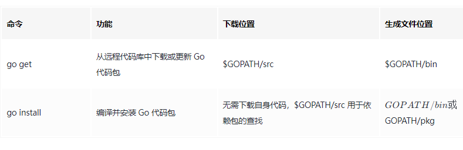
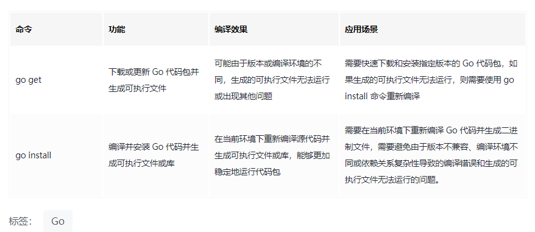

go get 和 go install 对比
（一）命令定义和区别
go install 和 go get 都是 Go 语言的工具命令，但它们之间有一些区别。
go get：用于从远程代码存储库（如 GitHub）中下载或更新 Go 代码包。它会下载代码包并将其存储在$GOPATH/src目录下对应的位置，并编译代码包中的程序和库。如果目标包之前已经被下载过了，那么go get会尝试更新到最新版本，并重新编译程序和库文件。在更新完代码包后，go get还会自动把下载的代码包的可执行文件复制到$GOPATH/bin目录下，以方便直接使用该可执行文件。go install：用于编译并安装 Go 代码包，并将其生成的可执行程序或库文件存储到$GOPATH/bin或者$GOPATH/pkg目录下。如果你在项目目录下执行go install，它将会编译并安装当前项目的代码，生成可执行文件并将其保存到$GOPATH/bin目录下（如果项目是一个库，则生成的是.a文件，并将其存储到$GOPATH/pkg目录下）。
因此，go get 用于下载和更新代码包，并产生对应的可执行程序，而 go install 用于将一个 Go 代码包转化为可执行程序或库文件，并安装到系统路径以供直接使用。
使用表格形式对 go get 和 go install 进行比较：

二）go get 是否包含了 go install
可以认为 go get 命令包含了 go install 命令的功能，但它们之间还是存在一些细微差别。
go get 命令用于从远程代码库中下载或更新 Go 代码包，并自动编译生成相应的可执行程序，同时还将其安装到 $GOPATH/bin 目录下，以便简化程序的运行。go get 命令不需要指定包的路径，它会使用 Go 语言规范中约定的包导入路径来获取包信息，并自动处理包的依赖关系以方便编译。
相比之下，go install 命令则更为灵活，它可以编译并安装当前项目的代码，生成可执行文件或库，并将其保存在 $GOPATH/bin 或 $GOPATH/pkg 目录下。同时，go install 命令还可以通过指定 -ldflags 参数来修改二进制文件的链接标志，从而将一些自定义的元信息加入到二进制文件中，使得可以在运行时通过代码读取这些信息。
在 Go 1.16 版本之后，go get 命令已经默认使用了 Go 模块管理工具。而 go install 命令则始终需要先进入到处于 Go 模块管理的路径下，然后才能使用该命令编译并安装相关代码包。
综上所述，可以认为 go get 命令包含了 go install 命令的部分功能，但是在一些特殊情况下，还是需要使用 go install 命令来进行更灵活的编译和安装操作。
（三）为什么要用 go install
在使用 go get 命令下载并安装代码包时，有些情况下生成的可执行文件可能无法生效，这通常是因为 Go 语言版本不兼容或编译环境不同导致的。而使用 go install 命令则可以避免这些问题，下面列举了几种常见情况：
- 版本不兼容：如果
go get命令下载的代码包和当前使用的 Go 语言版本不兼容，那么go get命令可能会产生编译错误或生成无法运行的可执行文件。对于这种情况，使用go install命令可以保证使用的是当前系统上与 Go 语言版本兼容的编译器。 - 编译环境不同：在使用
go get命令下载代码包时，有时它们的编译环境与当前环境不同，可能会导致可执行文件无法正常工作。而在使用go install命令时，该命令会在当前环境下重新编译源代码并生成可执行文件，从而能够更加稳定地运行代码。 - 依赖关系复杂：在使用
go get命令下载大型的代码包时，它可能会自动下载和安装大量依赖项。这样可能会导致依赖关系变得复杂而难以管理，有时可能会在下载或编译依赖项时产生错误或警告。而go install命令会直接从当前路径下对应依赖项中寻找依赖项，因此可以避免这种情况下带来的复杂性和错误。
综上所述，尽管 go get 命令十分方便快捷，但在遇到一些特殊情况时，仍然需要使用 go install 命令以获得更加稳定的编译和安装效果。
可以使用如下表格来对比 go get 和 go install 的编译区别：
